The Modbus communication protocol is the oldest and by far the most
popular automation protocol in the field of process automation and
SCADA (Supervisory Control and Data Acquisition).
Figure 1
Knowing how to create Modbus based networks is essential for any
electrical technician and engineer working in these occupation
fields. Being able to integrate devices from different manufacturers
is a skill that is in demand and will ultimately make you more
valuable and marketable in the industry. Modbus is a communications
protocol published by Modicon in 1979 for use with its Programmable
Logic Controllers (PLCs). Modicon is now owned by Schneider
Electric. Modbus provides a common language for devices and
equipment to communicate with one and another. For example, Modbus
enables devices on a system that measures temperature and humidity
connected on the same network to communicate the results to a
supervisory computer or PLC.
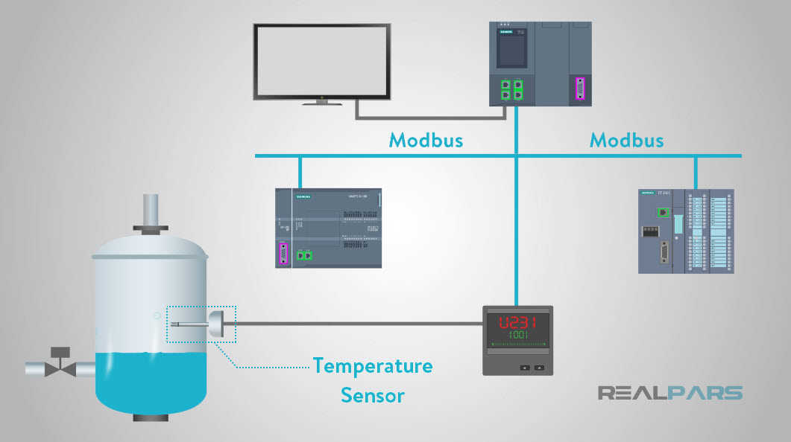
Figure 2
The development and update of Modbus protocols have been managed by
the Modbus Organization. The Modbus Organization is an association
of users and suppliers of Modbus-compliant devices.
Types Of Modbus Protocol
Several versions of the Modbus protocol exist for the serial port
and Ethernet and the most common are:
Modbus RTU
Modbus ASCII
Modbus TCP
Modbus Plus
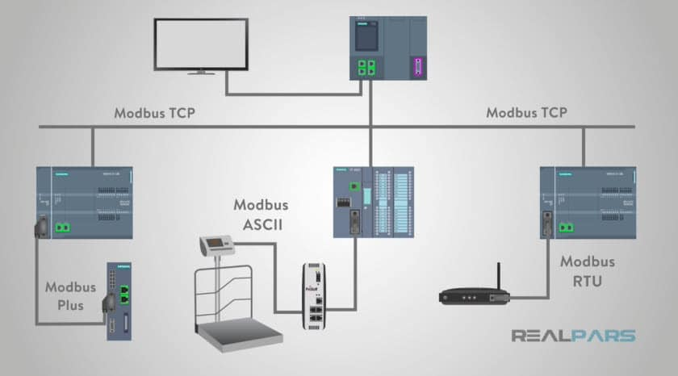
Figure 3
Modicon published the Modbus communication interface for a multidrop
network based on a Master-Slave architecture. Communication between
the Modbus nodes is achieved with send request and read response
type messages.
Physical Media
Modbus is an open standard that describes the messaging
communication dialog.
Modbus communicates over several types of physical media such as:
Serial RS-232
Serial RS-485
Serial RS-422
Ethernet
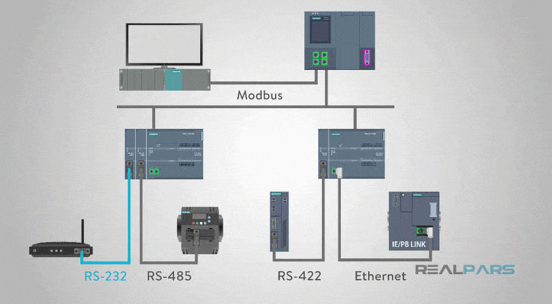
Figure 4
The original Modbus interface ran on RS-232 serial communication,
but most of the later Modbus implementations use RS-485 because it
allowed:
Longer distances.
Higher speeds.
The possibility of multiple devices on a single multi-drop
network.
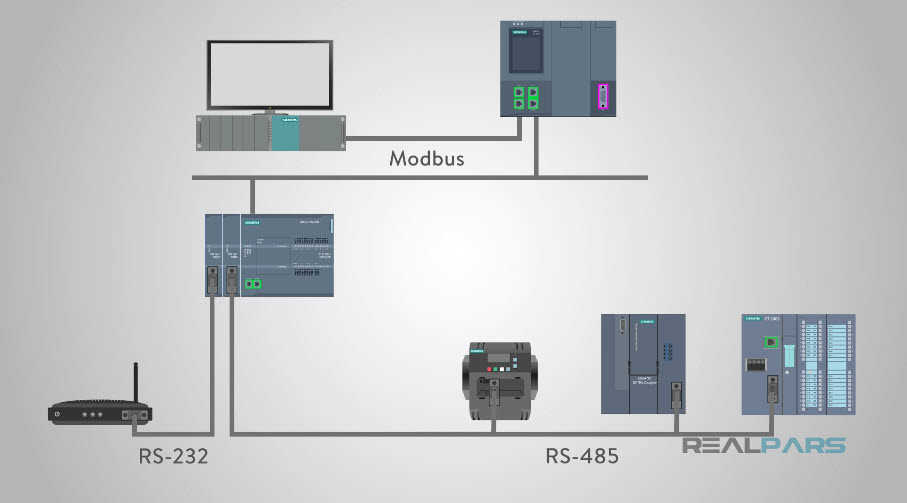
Figure 5
Master-Slave Modbus communication over serial RS-485 physical media
using two-wire transmit and receive connections
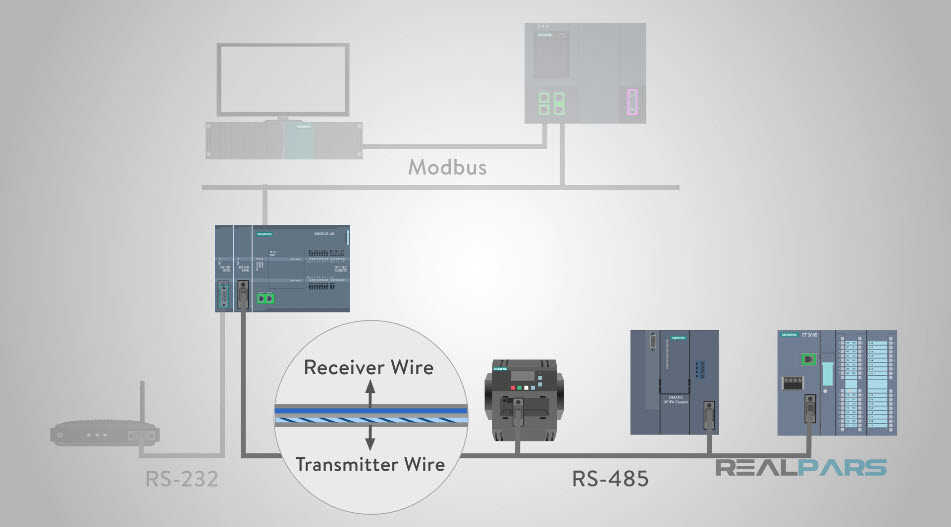
Figure 6
On simple interfaces like RS232 or RS485, the Modbus messages are
sent in plain form over the network and the network will be
dedicated to only Modbus communication. However, if your network
requires multiple heterogeneous devices using a more versatile
network system like TCP/IP over Ethernet, the Modbus messages are
embedded in Ethernet packets with the format prescribed for this
physical interface. So in this case, Modbus and other types of mixed
protocols can co-exist at the same physical interface at the same
time.
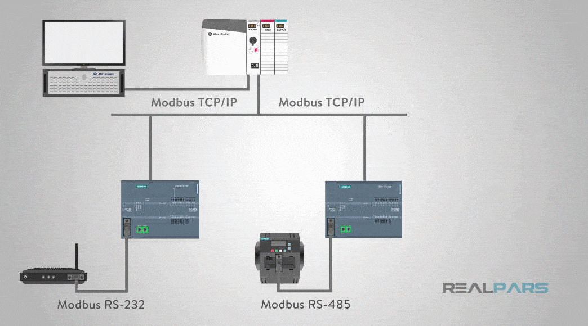
Figure 7Modbus Message Structure
The main Modbus message structure is Peer-to-Peer. Modbus is able to
function on both Point-to-Point and Multidrop networks.
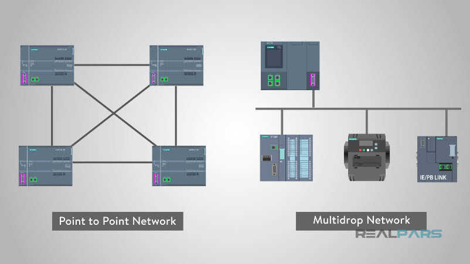
Figure 8
Modbus devices communicate using a Master-Slave (Client-Server for
Ethernet) technique in which only one device (the Master/Server) can
initiate transactions (called queries). The other devices
(Slaves/Clients) respond by supplying the requested data to the
master, or by taking the action requested in the query. A slave is
any peripheral device such as an I/O transducer, valve, network
drive, or other measuring types of devices which processes
information and sends its response message to the master using
Modbus. Masters can address individual slaves or initiate a
broadcast message to all slaves. Slaves return a response to all
message queries addressed to them individually, but do not respond
to broadcast messages. Slaves do not initiate messages on their own
and only respond to message queries transmitted from the master.
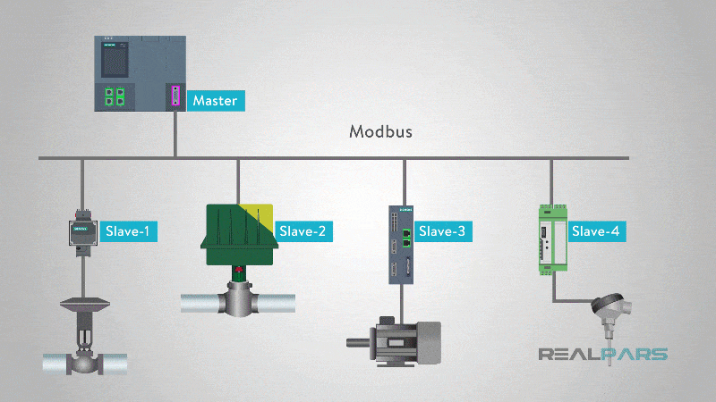
Figure 9
The master’s query will consist of:
Slave address (broadcast address).
Function code with a read or write data command to the slave.
The write command “Data” if a write command was initiated by the
master.
Error checking field.
The error checking is a value the master or slave creates at the
beginning of the transmission or response and then checked when the
message is received to verify the contents are correct.
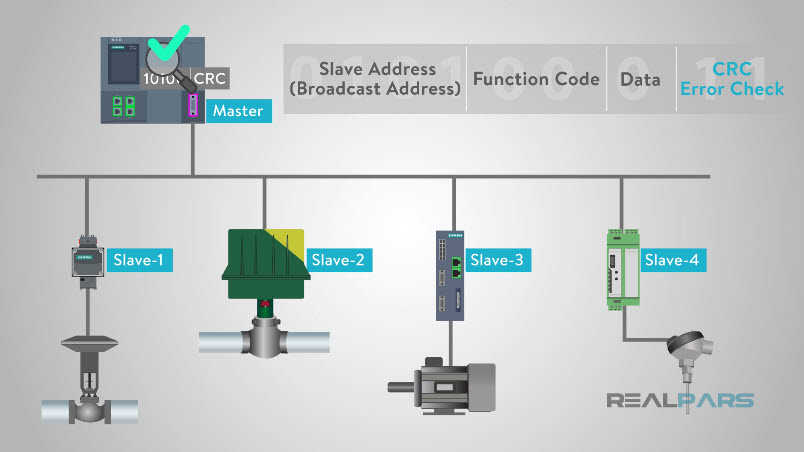
Figure 10
A slave’s response consists of:
Fields confirming it received the request.
The data to be returned.
Error checking data.
If no error occurs, the slave’s response contains the data as
requested. If an error occurs in the message query received by the
slave, or if the slave is unable to perform the action requested,
the slave will return an exception message as its response.
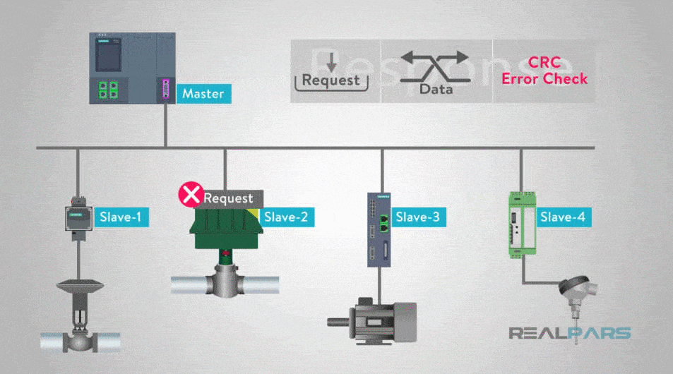
Figure 11
The error check field of the slave’s message frame allows the master
to confirm that the contents of the message are valid.
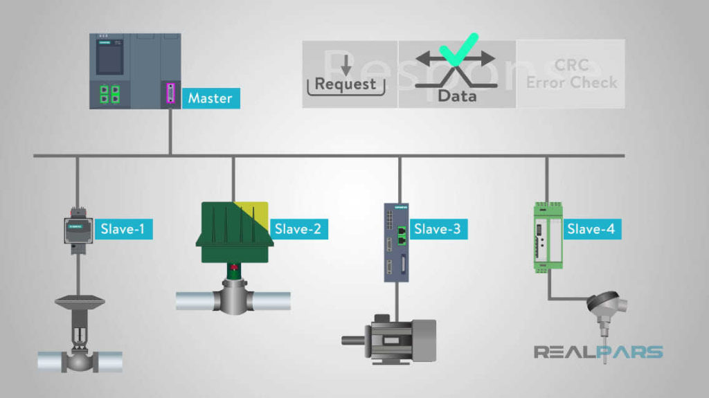
Figure 12EasyModbus Library (.Net)
Fast and secure access from PC or Embedded Systems to many
PLC-Systems and other components for industry automation. Only a few
lines of codes are needed to read or write data from or to a PLC.
The optional Modbus2Mqtt Bridge allows to publish values to a
Mqtt-Broker. Additional Software tools e.g. Modbus Server Simulator,
makes software development fast and easy.